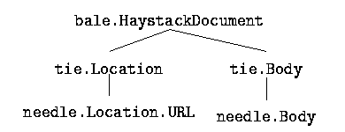
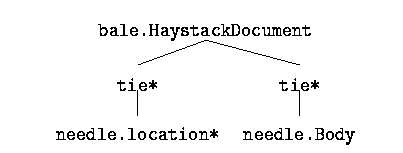

In order to express interest in a specific subgraph, a service instantiates a StarGraph object with information about the desired structure. Within Haystack, we define a star graph to consist of a central node with a number of attached rays. We can have any number of (uniquely labeled) rays which consist of Tie objects and the Straw object each Tie is connected to.
An example may clarify this model. The HsTypeGuesser service
has the task of deciding the type of an object. Type can be guessed
by two heuristic methods. One method is based on analysis of the file
name or Uniform Resource Location (URL) and the other method is based
on the analysis of the content of the document . The HsTypeGuesser is therefore interested in a
bale.HaystackDocument object connected to a
needle.Location.URL and a needle.Body object.
Graphically, this corresponds to Figure
. The HsTypeGuesser is therefore interested in a
bale.HaystackDocument object connected to a
needle.Location.URL and a needle.Body object.
Graphically, this corresponds to Figure  .
.

Figure: A Sample star graph.
In this case, we don't actually care what the types of the two
Ties are. The graph is still of interest whether the
needle.location.URL is connected by a
tie.location.URL, a tie.Location, or just a
Tie. Say we also have a new type of needle.Location
extension. For example, a needle.location.RMAILID, which
indicates the location of a specific mail message in an RMAIL file.
We extend our HsFetchService to retrieve this type of
document. Our fetch service is now not only interested in the
needle.location.URL, but also other kinds of
needle.location objects. We now want to see the
StarGraph that includes the wildcard for of the
needle.Location type, specifically
needle.Location* character). To allow for this behaviour, the
StarGraph object is instantiated not with an explicit
description of the sub-graph, but rather a regular expression that
models all acceptable matches. Figure represents
this graphically. Note also that we are assuming a case insensitive
regular expression (i.e. tie* matches Tie, tie,
and tie.Location). The complete defintion of the
StarGraph regular expression syntax is available
in [6].

Figure: A Sample star graph with regular expressions.